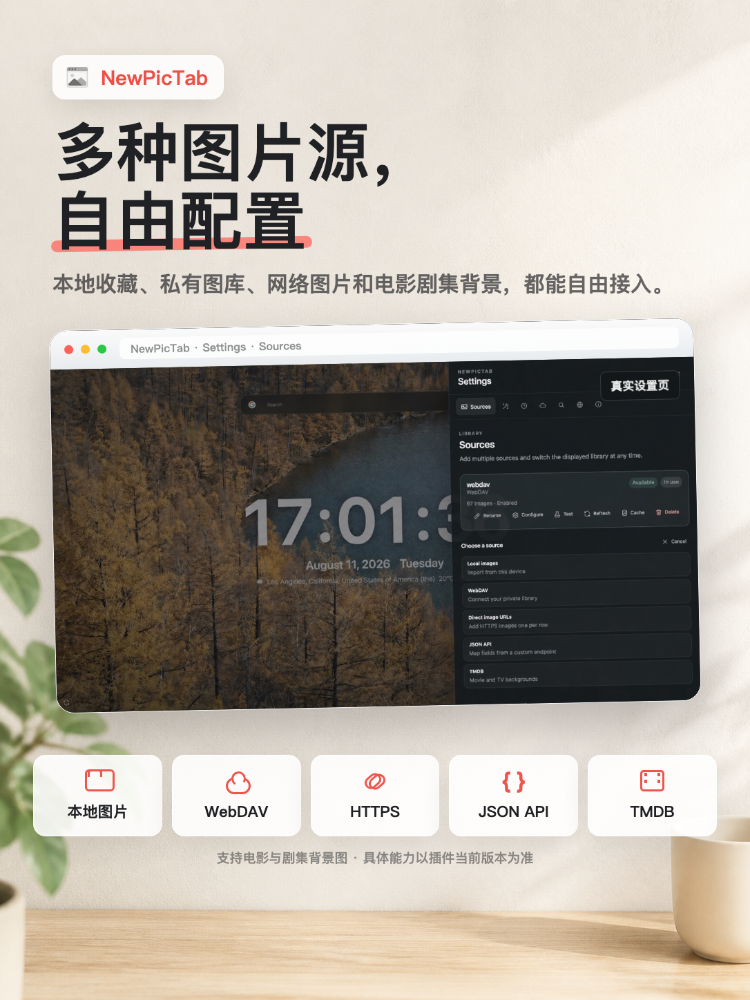
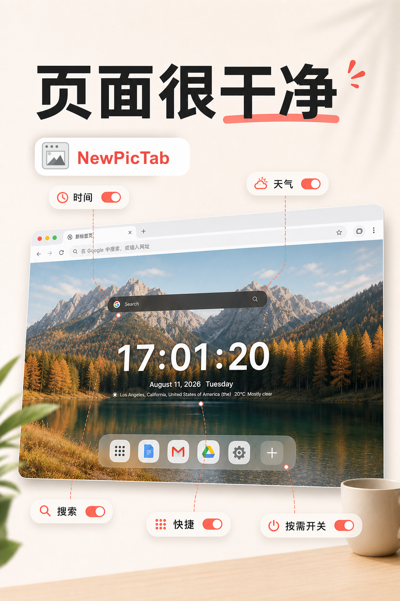

连接你的图片
支持本地图片、WebDAV、HTTPS、JSON API 与 TMDB。
Chrome 新标签页 · 免费开源
连接自己的图片来源，只显示真正需要的内容。没有广告，没有账号，数据留在你的浏览器里。
无广告 · 无账号 · MIT 开源
NewPicTab 把图片来源、页面组件和隐私控制收进一个安静的新标签页。
支持本地图片、WebDAV、HTTPS、JSON API 与 TMDB。
时间、天气、搜索和快捷网址都可以独立开关。
没有开发者服务器、广告、统计、遥测或跟踪。
了解隐私设计
